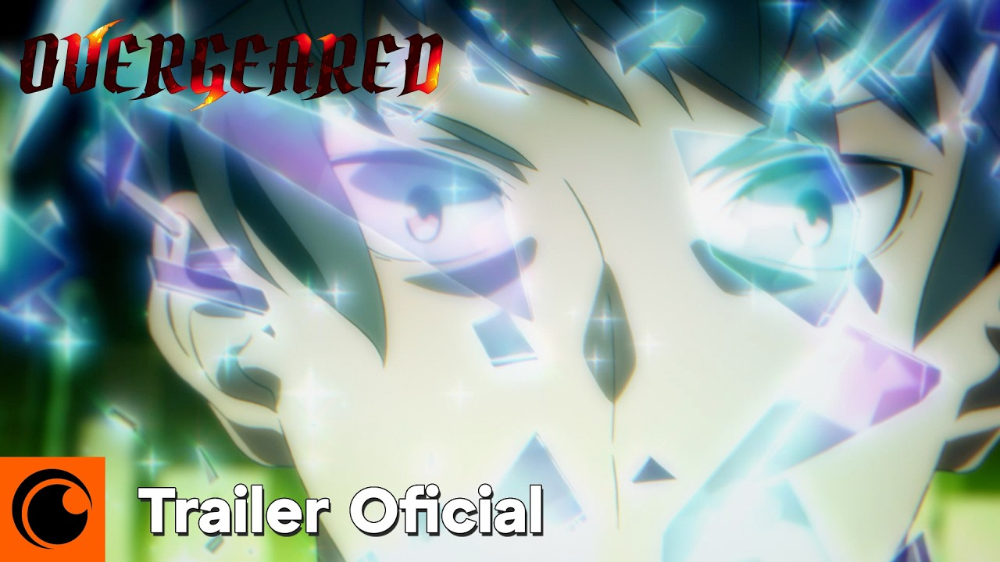
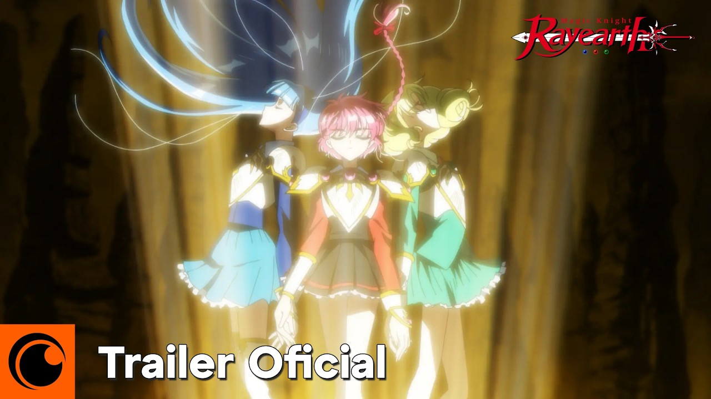
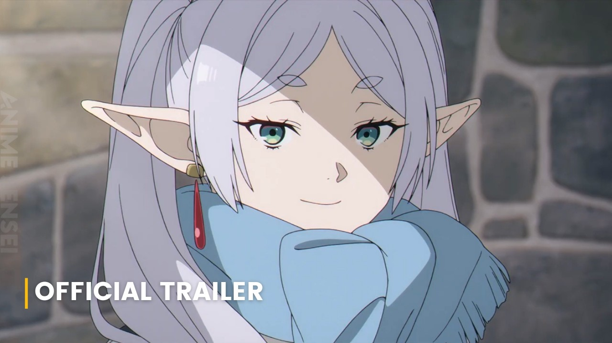

The Apothecary Diaries Season 3
Drama, Fantasy, Slice of LifeMaomao Courtney bekerja sebagai apoteker di istana. Season 3 melanjutkan kasus lingkungan dan politik yang lebih rumit.
Studio OLM Tayang 2 Oktober 2026 Tonton trailer →Anime yang sedang tayang, playlist episode resmi, dan tempat menonton legal.
Lineup musim gugur 2026. Trailer diambil dari kanal resmi tiap studio.
Maomao Courtney bekerja sebagai apoteker di istana. Season 3 melanjutkan kasus lingkungan dan politik yang lebih rumit.
Studio OLM Tayang 2 Oktober 2026 Tonton trailer →Kagari, seorang Executioner muda, menjadi anggota Replace Table. Cerita penuh konflik antara yokai dan manusia.
Studio Studio Hibari Tayang 2 Oktober 2026 Tonton trailer →Asta dan Charmy kembali untuk season 2, dengan aksi yang lebih intens dan masa depan Magic Kingdom yang mulai Terbuka.
Studio Pierrot Tayang 3 Oktober 2026 Tonton trailer →
Sedang TayangProto Korea, samurai muda dengan kemampuan tak terbatas, tiba di dunia MMO yang penuh guild dan quest.
Studio Studio N Tayang 27 September 2026 Tonton trailer →
Sedang TayangCeline, Hikaru, dan Fu harus menyatukan pasukan Toumashia untuk melindungi dunia dari NX.
Studio Sunrise Tayang Oktober 2026 Tonton trailer →
Sedang TayangPerjalanan Frieren dan teman-temannya memasuki fase baru setelah arc sebelumnya selesai.
Studio Madhouse Tayang Oktober 2026 Tonton trailer →Detail studio, jadwal tayang, dan platform legal untuk tiap judul.
| Judul | Genre | Studio | Mulai Tayang | Platform Legal | Trailer |
|---|---|---|---|---|---|
| The Apothecary Diaries Season 3 | Drama, Fantasy, Slice of Life | OLM | 2 Oktober 2026 | Netflix, Crunchyroll | Trailer |
| TOUGEN ANKI | Action, Supernatural, Dark Fantasy | Studio Hibari | 2 Oktober 2026 | Crunchyroll | Trailer |
| Black Clover Season 2 | Action, Fantasy, Adventure | Pierrot | 3 Oktober 2026 | Crunchyroll | Trailer |
| Overgeared | Action, Fantasy, Overpowered | Studio N | 27 September 2026 | Crunchyroll | Trailer |
| Magic Knight Rayearth | Action, Fantasy, Mecha | Sunrise | Oktober 2026 | Crunchyroll | Trailer |
| Frieren: Beyond Journey's End Season 2 | Adventure, Drama, Fantasy | Madhouse | Oktober 2026 | Crunchyroll | Trailer |
Trailer dari kanal resmi tiap studio. Video di-embed langsung dari YouTube.